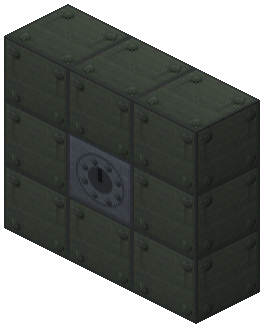
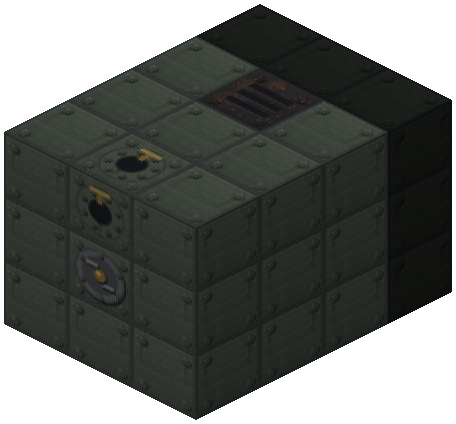
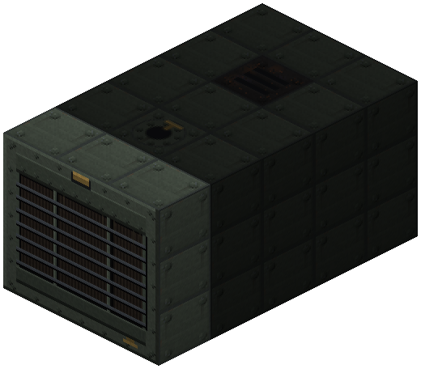
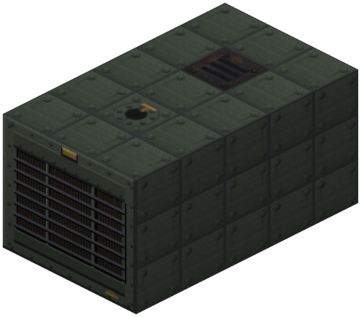

Diesel Controller (Radiator)


3×3 multiblock in a crankcase: cylinders 1–6 → head; fuel hatch, open exhaust. No water or gas. Diesel fuel: 25 hp per cylinder (up to 150), fuel oil — 60 % power; starts in 10 s, idle burns 10 % fuel.
The diesel is a stationary power plant for places with neither a river nor gas: you bring diesel and fuel oil in barrels or a tank car. A 3×3 multiblock 3–8 blocks long with a radiator grille in front; no boiler or water, starts in 10 s, at idle it burns a tenth of rated fuel.
Assembly (the hub (radiator center) faces outward, everything else goes deeper behind it), casing everywhere is crankcase (diesel_casing; turbine casings do not fit the frame):
- face layer: hub + 8 crankcases, together they draw the radiator;
- along the axis: cylinders 1–6 → head (shaft or EU generator — the same as on turbines);
- ring around — crankcase with at least one fuel hatch (diesel or gas turbine one) and exactly one open exhaust (smoke). A condenser or a steam hatch will not do.
Power is 25 hp per cylinder: 1 — 25, 3 — 75, 6 — 150 hp. No material or cap: more cylinders, more power.
Fuel (heat value is the same as in a Railcraft boiler firebox):
- diesel — full power; 6 cylinders at full load burn ~0.11 mB/t (a bucket lasts ~8 minutes);
- fuel oil — heavy, slow running: 60 % power (90 hp on 6 cylinders) and 15 % more fuel per hp.
Where it stands: on the same coal/oil a steam turbine with a condenser (by a river) is slightly better, the diesel beats the gas turbine and is far better than a boiler with a piston engine. Its niche is a place, not a tier.
Heads are shared with the turbines: shaft or EU generator (150 hp = 75 EU/t, needs MV). It takes load on the line like a turbine: electric drive → turbines and diesels → piston engines. Click with an empty hand — frame, delivered/rated, speed, fuel per hp. Comparator — speed. The Zavod sensor card shows fuel.
The BuildCraft combustion engine now runs on gasoline only (small/portable engine); diesel goes to the diesel, kerosene and gas — to the gas turbine.
Parameters
| Era | 3 — Electricity |
|---|---|
| Multiblock | yes: 3x3xL frame: casing, stages along the axis, head, hatches |
| Drive | drives the shaft |
| Tanks, mB | 16000 |
| What it does | multiblock 3×3×(cylinders+2): diesel/fuel oil -> shaft or EU; needs neither water nor gas, fuel is shipped in |
| Input energy | diesel, fuel oil (slow running) |
| Output | shaft 25…150 hp or EU up to 75/t; smoke |
| Made of | see §2, docs/diesel.md |
| hp (Diesel) | 25 per cylinder, 1–6 cylinders: 25…150; on fuel oil 60 % (90) |
Numbers
| steam turbine: first stage power | 40 hp |
|---|---|
| turbine: each next stage gives this % of the previous one | 90 % |
| turbine: steam per 1 hp with one stage (piston engine — 1000) | 900 0.001 mB/hp/t |
| turbine: steam per hp divided by 1 + this × (stages − 1) | 8 % |
| turbine: IC2 superheated steam work multiplier | 160 % |
| turbine: max stages (frame length = stages + 2) | 6 |
| turbine: idle burns this share of nominal steam | 5 % |
| turbine: spin-up from zero to full speed | 600 ticks |
| turbine: run-down to stop without steam | 600 ticks |
| turbine: condenser exhaust work multiplier | 125 % |
| turbine: condenser cooling water per 100 mB of steam | 5 mB/100 mB |
| turbine: condensate = steam / this (water -> steam in Railcraft is 1:160) | 160 |
| turbine: generator head, EU per 1 hp | 500 0.001 EU/hp |
| turbine: generator buffer in packets of its tier | 2 packets |
| gas turbine: max compressor stages | 3 |
| gas turbine: max turbine stages (and no more than compressor stages) | 3 |
| diesel: cylinder power on diesel fuel | 25 hp |
| diesel: max cylinders | 6 |
| diesel: fuel heat per 1000 hp per tick on diesel fuel | 32 heat ticks per 1000 hp·t |
| diesel on fuel oil (slow running): rated power relative to diesel fuel | 60 % |
| diesel on fuel oil: consumption per 1 hp relative to diesel fuel | 115 % |
| diesel: idle burns this share of nominal fuel | 10 % |
| diesel: spin-up from zero | 200 ticks |
| diesel: flywheel run-down | 300 ticks |
Feeds
- no Zavod machine uses its product
Assembly
No water or gas needed. Face layer is crankcase only.

Back layer: the head (shaft or EU generator, shared with the turbines) in a ring of 8 crankcase blocks.

Cylinders on the axis (1–6, 3 here, 25 hp each) in crankcase rings. Behind the face: a fuel hatch (diesel; fuel oil — 60 % power) and exactly one exhaust.

Face: the controller in the middle of the radiator, 8 crankcase blocks around it draw the grille.

Faded blocks were placed in earlier steps.